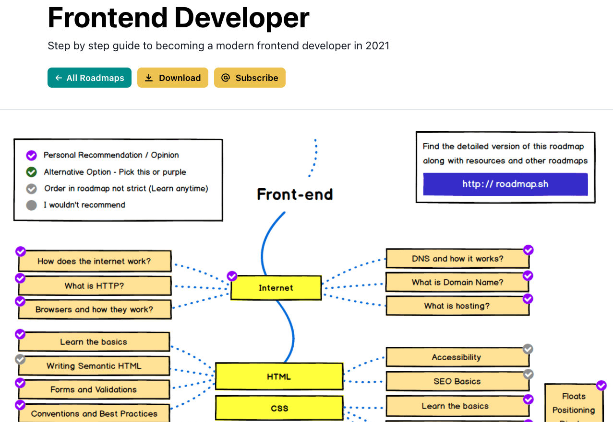
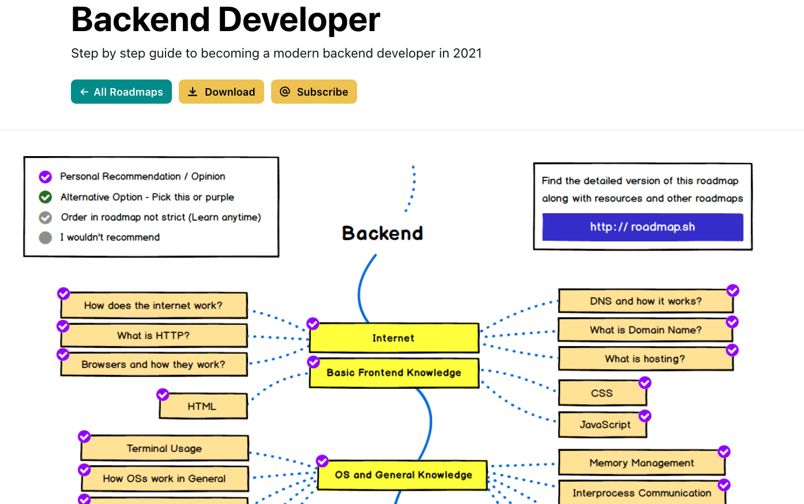
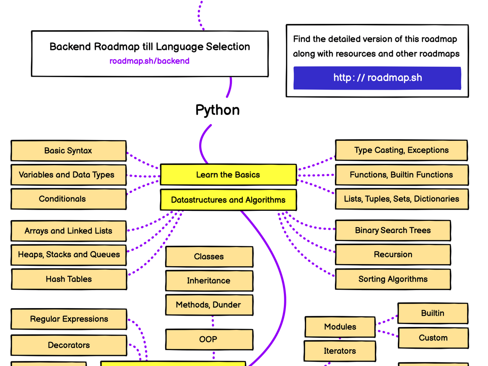

Introduction to Ag Informatics
Module 7, Lecture 4Ankita Raturi, ankita@purdue.edu
Outline for Today
- Mapping your path in Agricultural Informatics
Agricultural Informatics
- Design, build, and use
- *digital technology*
- to enable
- *people* to...
- grow and distribute food,
- manage natural systems,
- coordinate and organize work, &
- strategize for food system resilience.
Informatics Disciplines
- Human-Computer Interaction & Design
- Embedded Systems and IoT
- Computer Vision and Sensing
- Remote Sensing and GIS
- Data Science and Data Modeling
- Machine Learning and AI
- Web Development and Software Engineering
- Ethics, Information Theory, Law
Informatics Disciplines
- Human-Computer Interaction & Design
- Embedded Systems and IoT
- Computer Vision and Sensing
- Remote Sensing and GIS
- Data Science and Data Modeling
- Machine Learning and AI
- Web Development and Software Engineering
- Ethics, Information Theory, Law
Mapping your Pathway
- Human-Computer Interaction & Design
- Embedded Systems and IoT
- Computer Vision and Sensing
- Remote Sensing and GIS
- Data Science and Data Modeling
- Machine Learning and AI
- Web Development and Software Engineering
- Ethics, Information Theory, Law
Some course listings
- UX Design Courses in Polytechnic
- Spatial Data Science Certificate
- Applications in Data Science Certificate (>just data science courses)
- Digital Ag Course listing (though titled data science courses)
- Data-Driven Ag Minor
- .. and some tech-focused courses I've heard about:
- ABE 651 Environmental Informatics -- python, unix!
- AGEC 640 Agricultural Policy -- system modeling
- ASM 540 GIS Applications -- ArcGIS, spatial
- ABE 531 Instrumentation and Data Acquisition -- maybe Spring?
- FNR 498 Ecological Sensors and Data -- sensors!
- AGRY 598 Plants Data and Computational Thinking -- simpler python
- ASM 422 Advances in Crop Production -- QGIS / Precision Ag
- AGRY 333 Data Science for Agriculture -- survey of topics
Spring, ASM 591:
Research & Practice in
Agricultural Informatics
This course will empower you to think critically about the role of digital technologies in food systems and agriculture, and provide a structured experience for you to implement a project of your choosing. We will alternate between two lecture formats over the semester. The first lecture format will be discussion-based meetings where students will review state of the art in research and practice on topics in digital agriculture, and engage in critical assessment of topics such as: data ethics, open source, sensing across scales, algorithmic bias, design justice, etc. The goal is dig into informatics research and consider how it influences the design of technologies for food and agricultural systems. Students will engage in one research/development project in which you either a) write a research article, or b) implement an informatics project in the domain of food systems and agriculture. Thus, the second lecture format will be workshop-style meetings in which students will report on their project process and challenges, provide peer-feedback and review, or simply use the space to get input on their work. Those who took Intro to Ag Informatics (Fall 2021) can build out their previously propose solution, while new students will be invited to put together a short proposal before diving into their implementation.
TL;DR:
- 2 credits = 1 lecture per week
- Alternate between reading papers/discussion + presenting your project/work for peer review
- Space to build out your project or write a paper
- Come workshop your paper/project/idea!
Programming Skillz Roadmaps
Programming Skillz Roadmaps
Programming Skillz Roadmaps
Learning via the Interwebs
Remember: Previous modules have specific resource lists!
Here's a few more:
Learning via the Interwebs
Remember: Previous modules have specific resource lists!
Here's a few more:
Learning via the Interwebs
Remember: Previous modules have specific resource lists!
Here's a few more:
Questions?
License
- Attribution Recommendation: Introduction to Agricultural Informatics Course", Ankita Raturi, Purdue University, 2021. Available at https://github.com/ag-informatics/ag-informatics-course. Licensed by CC BY-NC-SA 4.0.

This course is licensed under a Creative Commons Attribution-NonCommercial-ShareAlike 4.0 International (CC BY-NC-SA 4.0) license. This is a human-readable summary of (and not a substitute for) the license. Official translations of this license are available in other languages.
You are free to:
- Share — copy and redistribute the material in any medium or format
- Adapt — remix, transform, and build upon the material
Under the following terms:
- Attribution — You must give appropriate credit, provide a link to the license, and indicate if changes were made. You may do so in any reasonable manner, but not in any way that suggests the licensor endorses you or your use.
- NonCommercial — You may not use the material for commercial purposes.
- ShareAlike — If you remix, transform, or build upon the material, you must distribute your contributions under the same license as the original.
- No additional restrictions — You may not apply legal terms or technological measures that legally restrict others from doing anything the license permits.